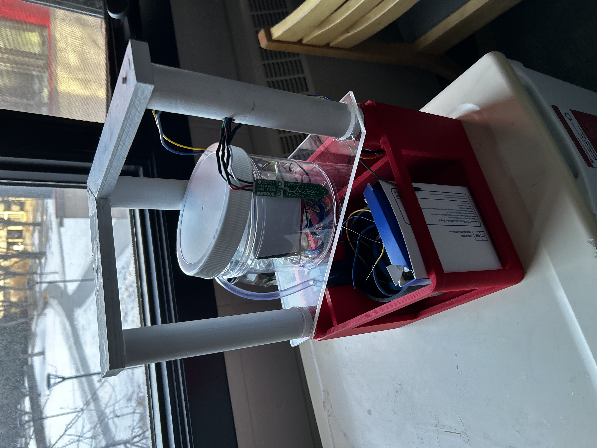
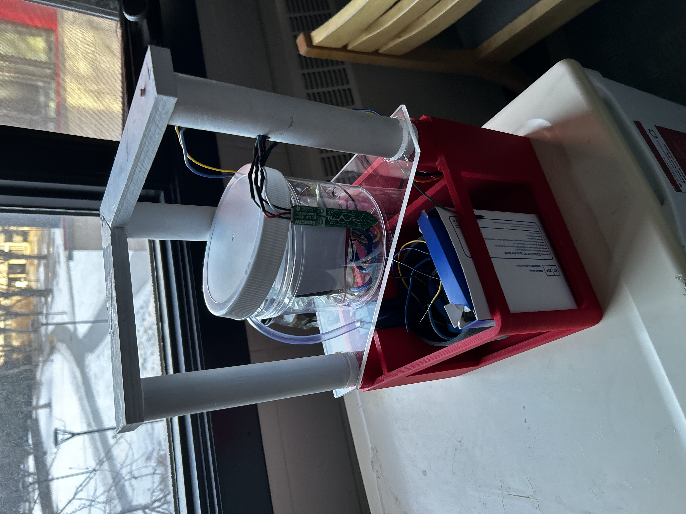

Projects Gallery
 

Self Controlled Garden
This is the first engineering project I worked on during my university career. The project included 3D printing an outer shell, coding the Arduino to control timing of the lights and watering, and wiring the system together.
Handheld Game Console
My second engineering project was a handheld game console, which ran fully off an Arduino Uno and 2 AA batteries. We had to design a game to go along with the console, which came with the struggle of portable power that the Arduino had.
Airport Management System
My first major software based project was a C++ based Airport Management System, which supplied input/output access through the terminal and established a class-based system as to allow modularity and easier code repair.
Disaster Relief Database Manager
My next major project was a Java developed Disaster Relief Application, which used GUI inputs to manipulate a database storing information about families effected by a disaster, shelter info. Through the use of classes, the project was established as a modular, complex system that followed aspects of OOP programming rules.
Full Stack Website
My longest project involved the full stack development process, from HTML basics to reimplementation in an efficient React-based application, I created an online shopping website capable of handling front-end inputs from the user and back end storage of their data. With inputs such as login info and choice of items to buy, the user can store that info in their specific account and access it for every purchase.
Movie Matching Website
This project is built in to this website, and uses an API call to OMDb API by Brian Fritz to access movie data. It uses this API call to search a specified title from the user and returns data such as rating, genre, summary, and much more! To test it out, click on the title of this section or go to Movie Matcher in the navigation bar.
Built to Scale Fish
This was my very first Game Jam, as I had just recently started game development at this point. My friends and I made Built to Scale Fish based on the prompt "Built to Scale", where we took it very literal. We built the project in Unity over 48 hours (during work as well!) and made a infinite point collection game where you slice fish that jump at you. Although we didn't do too great, we learned a lot in the game making process and brought our experience to the new games we're developing.
Hospital Appointment Interface
This was my first Hackathon project, where we were tasked to make a mockup of the Foothills Hospital Booking System. It uses a React-based frontend with a PostgreSQL backend, integrated with a Javascript implementation. While we didn't win the competition, we completed the project to further add to the skills of our software journey.
Read Back
This was my second Hackathon project, where we were tasked with making a program that would "leverage technology to provide access to justice for all". It uses a React-based frontend with a PostgreSQL backend, integrated with a Python implementation. It includes features like ChatGPT definition expansion for further understanding, audio description for photos, and livestream court viewing. With ReadBack, we ended up placing 3rd overall at Hack the Change 2024!